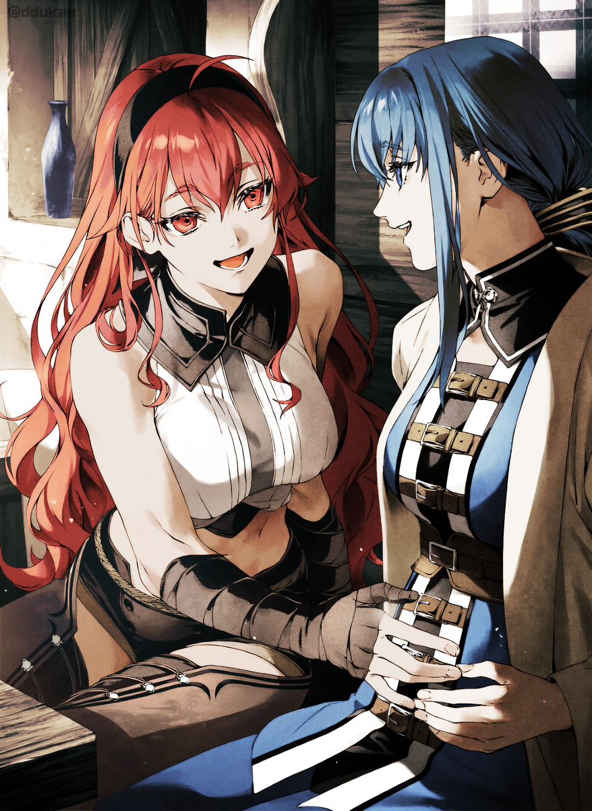

Rudeus ve diğerlerinin geceyi Kılıç Tapınağı’nda geçirmesine karar verildi. Onlara uyumaları için ana eğitim salonunda bir oda verilirken, Eris tek başına Nina’nın evine davet edildi. Rudeus’la birlikte eğitim salonunda kalmayı planlamıştı ama Nina ısrar etti.
Nina’nın evi, Gino Britz’in evi demekti. Eris, Rudeus’a tek başına kalacağını söylediğinde Rudeus endişelenmiş ve onu nazikçe vazgeçirmeye çalışmıştı. Kılıç Azizleri’nin nasıl davrandığını görmüştü; Eris, Gal’ı öldürmüştü ve onlar da kan peşindeydi. Ortam Rudeus’u germişti. Eris ise Kılıç Tapınağı’nın her zaman böyle olduğunu hatırlıyordu. Kılıç savaşçıları güçlü olmaktan çok güçlü görünmek isterlerdi. Eğitim salonu dışında daha yüksek rütbeli bir rakibe saldıracak kadar cesareti olan kimse yoktu. Bunu sadece Eris deneyebilirdi, o da çok daha gençken.
Rudeus ve diğerlerini eğitim salonunda bırakıp tek başına Britz hanesine doğru yola çıktı. Salondan kısa bir mesafede, bir Kılıç Tanrısı için hayal edeceğiniz gibi görünmeyen küçük bir evde yaşıyorlardı.
“İşte geldik. İçeri gel. Gino antrenmanını bu saatlerde yapar, o yüzden henüz evde değil.”
“Peki, şey, teşekkürler.” Eris gergin bir şekilde içeri girdi. Düşününce, bu, bir arkadaşının evine takılmaya gittiği ilk sefer olabilirdi. Asura başkentinde yaşayan Isolde’yi Asura Krallığı’nı her ziyaret ettiklerinde görüyordu ama Eris onun evine hiç gitmemişti. Isolde’nin evine bağlı olan eğitim salonuna gitmişti ama bu tam olarak aynı şey değildi.
“Meeerhabaaa!”
Eris sinirleriyle boğuşurken, neşeli bir ses onu selamlamak için seslendi. Evin arkasından fırlayan iki çocukla birlikte tıpır tıpır ayak sesleri duyuldu.
“Hoş geldin, anne!”
“Selam, anne!”
Biri, sağ elinde bir alıştırma kılıcı ve yüzünde kocaman bir sırıtışla enerji dolu bir oğlan çocuğuydu. Diğeri ise bir kızdı. Neredeyse hâlâ bir bebekti ve sendeleyen adımlarla oğlanın peşinden koşturuyordu. İkisi ön kapıya koştular, ancak Eris’i görünce ağızları bir karış açık bir şekilde durakladılar.
“Bu benim oğlum Nell ve kızım Jill. Çocuklar, bu Eris. O benim bir arkadaşım.”
“Şey, tanıştığımıza memnun oldum.” Nina onu arkadaşı olarak tanıttığında Eris biraz kaşlarını çattı ama başını eğdi.
Nell onun adını duyunca gözleri fal taşı gibi açıldı. “Kızıl saçların var! Sen Vahşi Kılıç Kralı Eris misin?!”
“Kıymıjı şaç!” diye mırıldandı Jill. Anlamamış ve sadece abisini tekrar ediyor gibiydi, yine de bir şeyin ilgisini çektiği belliydi. Gözleri pırıl pırıl parlayarak Eris’e yaklaştı. Belki de kızıl saç Tapınak’ta nadirdi. Jill’in küçük eli onun dalgalı saçlarına uzandı ama oraya varamadan Nina onu kucağına aldı.
“Dur bakalım,” diye azarladı.
“Paylak kıymıjı!” diye sızlandı Jill, bacaklarını aşağı yukarı sallayarak.
Bunu gören Nell hemen, “Hayır, Jill! O Vahşi Kılıç Kralı! Ona dokunursan seni bir lokmada yutar!” dedi.
“Isıyıy mı?” Jill korkuyla Eris’e baktı. Bu manzara karşısında Eris hafifçe güldü. Davranışları ona birkaç yıl önceki Arus ve Sieg’i hatırlatmıştı.
“Seni yemem,” dedi Eris.
“Sadece gardlarını düşürmelerini sağlamak için böyle söylüyorsun, sonra onları bir çırpıda kapıvereceksin.” Nina şüpheyle gözlerini kısarak Eris’e baktı. Eris ona ters ters baktı, o noktada Nina’nın yüzünde bir gülümseme belirdi.
“Sadece şaka yapıyorum,” dedi, Jill’i uzatarak. “Onu tutmak ister misin?”
“Elbette.” Eris, Jill’i kucağına aldı. Küçük kız ilk başta korkmuş görünüyordu ama Eris’in bebek tutmaya kendi annesinden çok daha alışkın olduğunu sezmiş olmalı ki çabucak neşelendi.
“Kıymıjı! Güjey!” dedi mutlulukla, Eris’in saçından bir tutam kapıp ağzına tıkarken.
“Ah, hayır, Jill! Onu yeme!”
“Av…” Nina onu azarlayınca Jill hemen saçı ağzından çıkardı. Kızıl olsun ya da olmasın, sonuçta saçtı, bu yüzden tadı güzel olamazdı. Şimdi, Eris’in saçı yapış yapış olmuştu.
“Sanırım yenen ben oldum,” dedi Eris gülümseyerek. Jill’in başını okşadı.
Nina’nın gözlerinde bir şaşkınlık ifadesi belirdi. Bu, aynı Eris mi?
Bunu daha önce Asura Krallığı’nda bir kez görmüştü. Eris artık tıpkı onun gibi bir anneydi; çocuklarla nasıl başa çıkacağını biliyordu.
“Tadı güzel değildi, değil mi? Demek ki bu yemek için değil. Tamam mı?” dedi Eris, Jill’e.
“’mam.”
Jill’i yere bıraktı ve kız evin içine doğru seke seke gitti.
“Ben Nell Britz!” Onun yerini almak için öne çıkan Nell oldu. Diz çöktü, sonra eğildi. “Sen gerçek Vahşi Kılıç Kralı’sın, ha? Sizinle tanışmak bir onur!”
“Ben, şey, Eris Greyrat. Eğilmene gerek yok.”
“Ah, hayır…! Şey! Bu, şey…! Ben her zaman…” Nell gözleri parlayarak ve yüzü heyecanla dolu bir şekilde kelimelerini toparlamaya çalışırken Eris’e baktı.
“Nell, bu kadar yeter,” diye araya girdi Nina. “Eris’i daha ne kadar girişte ayakta tutacaksın? En azından akşam yemeğini yiyene kadar bekle.” Elini onun başına koydu ve saçlarını normalden biraz daha sert bir şekilde karıştırdı.
“Pekiii.” Nell, hayal kırıklığı içinde gözlerini yere indirdi. Daha fazlasını duymak, mümkünse onunla kılıç antrenmanı yapmak istiyordu… ama annesi kesinlikle hayır derdi. Her zaman hayır derdi. Kılıç Tapınağı’na ne kadar ünlü bir kılıç savaşçısı gelirse gelsin, annesi Nell’i onlarla hiç tanıştırmazdı.
Hayal kırıklığına uğramış Nell’i geride bırakan Eris, evin içine doğru yönlendirildi.
“Herkes değişmiş, ha?” Akşam yemeğinden sonra Eris, Nina ile konuşurken oturma odasında rahatladı. Gino orada değildi. Yemeklerini yedikten sonra çocukları başka bir odaya götürmüştü. Çocukların kahkaha seslerine bakılırsa, Eris onlarla oynadığını varsaydı.
“İşlerin bu şekilde sonuçlanacağını hiç beklemezdim.”
Nina, Eris ve Gino üçlüsünden Gino her zaman bir adım gerideydi. Kılıcını sallarken her zaman somurtkan görünen ve Kılıç Tanrısı’nın sorularına cevap veremeyen oydu. Aynı Gino, Nina ile evlenmiş ve Eris’i tek bir darbede indirmişti. Eris şaşkınlığını gizleyemedi. Bunu Gal’dan duymuştu ama onu kendi gözleriyle görünce, gerçekten de sanki farklı bir insanmış gibiydi.
“Nina, demin eğitim salonunda kılıcını eline bile almadın.”
Aynı şey Nina için de geçerliydi. Güçlü olmak için kendini bu kadar zorladıktan sonra, sadece Eris’i izlemişti. Sadece bu da değil, Gino’nun istediği her şeyi yapmasına izin vermişti. Eris eski Nina’nın bunu yapabileceğini hayal bile edemiyordu.
“Sıradaki yolda,” dedi Nina, karnını okşayarak. Anlaşılması zordu ama yakından bakarsanız, orada hafif bir şişkinlik görülebiliyordu. Üzgün bir ifadeyle ekledi: “Gino, Kılıç İmparatoru unvanını almamı söyledi ama sanırım emekli olacağım.”
“Ve bu sana yetiyor mu?” diye sordu Eris, kendini tutamadan.

Nina aşağıya baktı ama yüzünde bir memnuniyet ifadesi vardı. “Evet… mutluyum. Elbette kılıçla biraz daha devam etmek isterdim ama bilemiyorum. İşin garibi, pek pişmanlığım yok. Sanırım Gino’ya yenildiğimde bir kılıç ustası olmayı bıraktım.”
“Yenildin mi?”
“Evet, Kılıç Tanrısı’na meydan okumadan önce bana, ‘Eğer kazanırsam benim ol,’ dedi. Hiçbir şeyi esirgemeden onunla dövüştüm ve kaybettim.”
“Evlenme teklif etmek için ne kadar da güzel bir yol.”
“Değil mi?” Nina o günü düşünerek usulca güldü. O güne kadar Nina dünyanın en güçlü kılıç savaşçısı, yani bizzat Kılıç Tanrısı olmak istemişti. Bu arzu bir anda yok olmuştu. Gino işte o kadar güçlüydü. Tıpkı bugün Eris’e yaptığı gibi, tek bir darbede onu saf dışı bırakmış, çabalarıyla adeta alay etmişti.
Eğer bu Gino olmasaydı, eğer küçükken peşinden sürüklediği çocukluk arkadaşı olmasaydı, belki de farklı hissederdi. Tıpkı Eris’e yenildikten sonra yaptığı gibi, yanaklarından süzülen gözyaşları ve yenilenmiş bir kararlılıkla kendini kılıç antrenmanına atabilirdi.
Ama bu Gino’ydu. Sırf onunla evlenmek için güçlenmişti. Onu yenmiş, sonra da Kılıç Tanrısı Gal Farion ile başa baş dövüşüp kazanmıştı. Kılıç Tanrısı unvanıyla geri döndüğünde, Nina’yı kucaklayıp zorla öpmüş, sonra da oracıkta yere itmişti. O gün Nina, hem zihnen hem de bedenen Gino’nun olmuştu. Nina, olağanüstü bir çaba olmadan Kılıç Tanrısı olmanın imkânsız olduğunu biliyordu. Ne sıkı çalışma ne de yetenek tek başına yeterliydi. Hatta ikisi birden bile yeterli olmayabilirdi. O güne kadar Gino, Nina’nın onu yönlendirmesine izin vermiş, onun kadar çaba göstermişti. Bu temelin üzerine, ondan bile daha ileri gitmiş, kan kusacak kadar kendini zorlamıştı.
Başarmıştı. Kılıç Tanrısı rütbesine ulaşmış, çok az kişinin erişebildiği bir yere gelmişti. Nina, onun buna uygun bir ödülü hak ettiğini düşündü—Gal Falion’un sözleriyle, istediğini yapmalıydı, bu yüzden hiçbir şey söylemedi. Bu konuda kendi düşünceleri ve söylemek istediği şeyler vardı ve Gino muhtemelen dinlerdi. Ama bunu yaparsa, onun aniden zayıflayacağı korkusuna kapıldı. Nina, hayranlık duymaya başladığı kişinin yoluna çıkamazdı. Bu yüzden, kılıcından vazgeçip bir sonraki mücadelesine, yani bir anne olmaya kendini adamaya karar verdi.
“Peki ya sen, Eris? Şimdi mutlu musun?”
“Evet, mutluyum.”
“Üç karısından biri olmana rağmen mi?”
“Evet. Bu normal. Babam sadece annemle evliydi ama dedemin pek çok karısı vardı. Rudeus’un babasının da iki karısı vardı.”
“Yani, Milis inancını takip etmiyorum ama ben sadece… çok eşli olmayı hayal edemiyorum,” dedi Nina.
Eris’in de kendine göre hayal kırıklıkları vardı elbette. Bazen Rudeus’un tek karısı olmanın nasıl bir şey olacağını merak ediyordu. Elbette mutlu olurdu. Bütün gün sadece ikisi, aralarına girecek kimse olmadan. Ama mesele de buydu—sadece o ve Rudeus olurdu. Bu, şu anki Greyrat hanesiyle karşılaştırıldığında nasıl olurdu? Eğer Sylphie ve Roxy olmasaydı, bu Lucie, Lara, Sieg ya da Lily’nin de olmayacağı anlamına gelirdi. Yine de Arus ve Chris’i olurdu ve diğer çocukların yerine belki kendisinin daha fazla çocuğu olurdu. Ama şu anki çocuklarından daha iyi çocuklar hayal edemiyordu.
Olabilecek olanla sahip olduğunu karşılaştırdığında, bir günlük antrenmandan sonra sırılsıklam ter içinde geldiğinde ona bir havlu uzatacak kimse olmazdı; çamurla kaplı bir Lara kollarına itilirken “Onu da banyoya sok” diyecek kimse olmazdı; ve çocukları yıkadıktan sonra çıktığında onun için temiz kıyafet ve iç çamaşırı bırakacak kimse olmazdı.
Birbirlerine tam doğru miktarda alan tanıyorlardı, sinir bozucu olacak kadar sıkı sıkıya yapışmıyorlar ama küçük işleri paylaşmaktan da çekinmiyorlardı. Eris, Sylphie ve Roxy olmadan hayatının nasıl olacağını hayal edemiyordu—ve hayat güzeldi. Çocuklarının büyümesini izlemek eğlenceli ve tatmin edici geliyordu. Yakında, onlarla daha ciddi kılıç antrenmanlarına başlayacaktı. Lucie kılıçtan çok büyüye odaklanmıştı ve Lara hâlâ biraz dalgındı ama Arus ve Sieg hevesli görünüyordu. Hatta Sieg şimdiden Kuzey Tanrısı Stili öğreniyordu. Onlara nasıl öğreteceğini ve nasıl büyüyeceklerini düşünmek Eris’i mutlulukla dolduruyordu.
“Sen de değiştin, Eris,” dedi Nina.
“Değiştim, ha?”
“Eski günlerde olsaydı, bir çocuğu evden uçan tekmeyle atardın.”
“Hadi canım! Asla bir çocuğu tekmelemem.”
“O zamanlar kendin de bir çocuk gibiydin. Şimdi ise onlara bakıyorsun.”
“İki tane yaptım.”
“Üçüncüye ne dersin?”
“Hayır, bu kadarı yetti.”
“İşin eğlenceli kısmından yeterince aldın mı?” diye sordu Nina.
Eris’in yanakları kıpkırmızı kesildi. “H-hayır, o kısımdan daha fazlasını istiyorum,” diye dürüstçe cevapladı. Hamileliğin sonlarına doğru ağırlaşıp özgürce hareket edememe hissini bir türlü sevemiyordu.
“Biliyor musun, seninle konuşmak şimdi çok daha kolay,” dedi Nina.
“Ben de seni şimdi daha çok seviyorum. Eskiden biraz baş belasıydın.”
“Öyleydimdir herhalde.”
Eski Nina’nın her yanı sivriydi. En iyisinin kendisi olduğunu düşünür ve altındaki herkese istediği gibi davranabilirdi. Eris tarafından haddinin bildirilmesi onu biraz yola getirmişti ama Gino ile evlenmek daha büyük bir fark yaratmıştı.
Eris aniden başka birini hatırladı. “Ah evet, duydun mu? Isolde de evlenmiş.”
Şimdi Su Tanrısı Reida adıyla anılan Su Tanrısı ekolünün ustası, Isolde Cluel.
“Evet, düğünle ilgili bir mektup aldım ama hamileydim, bu yüzden gidemedim.”
“Peki ya bebeği?”
“Bunu ilk defa duyuyorum. Kız mı erkek mi?”
“Kız. Su Tanrısı olarak çok fazla çocuğu olamaz, bu yüzden bir varis doğurmadığı için hayal kırıklığına uğramıştı.”
“Bu zor bir durum. Kocası bir Kuzey İmparatoru değil mi? Kız çocuğu olduğu için sinirlenmemiş ya da hayal kırıklığına uğramamış mıydı?”
“Dohga asla böyle bir şey söylemez. O iyi bir adamdır.” Eris konuşurken anılarını karıştırdı.
Isolde ve Dohga’nın evliliğine en çok karşı çıkan kişi Rudeus’tu. Dohga, Biheiril Krallığı’nda Rudeus’u kurtarmıştı, bu yüzden Rudeus hayatını Dohga’ya borçluydu ve ona gerçekten güveniyordu. Dohga masum, dürüst ve kolay lokma gibi görünüyordu. Rudeus onun Isolde gibi yüzeysel bir kadınla evlendiğini duyduğunda, onun paranın peşinde olup olmadığını ya da onu aldatıp aldatmayacağını merak etmişti. Hatta gizlice onun hakkında bir geçmiş araştırması bile yapmıştı. Belki de Isolde’nin de onu kurtardığını unutmuştu.
Her halükârda, kızından dolayı hayal kırıklığına uğramasına imkân yoktu. Rudeus’un çok güvendiği o masum Dohga’nın değil. Eris onu son gördüğünde, annesinin tıpatıp aynısı olan kızı omuzlarında otururken ağzı kulaklarındaydı. Isolde, onun temizlik ve çamaşır işlerini bile yaptığını ve çocuklara baktığını, hem de hepsini kendi inisiyatifiyle yaptığını söylemişti.
Kural olarak ev işleriyle pek ilgilenmeyen Eris bile Isolde’ye, “Senin de biraz yardım etmen gerekmez mi?” demekten kendini alamamıştı.
Isolde’nin mahcup bir şekilde başka tarafa bakıp, “Ama o bu işte daha iyi…” diye mırıldanmasını asla unutmayacaktı.
“Umarım çocuklarımız büyürken birbirlerine ilham verirler,” dedi Nina.
Eris başıyla onayladı. “Aynen. İstersen seninkini de Büyücü Üniversitesi’nde okuması için gönderebilirsin.”
“Kulağa hoş geliyor ama Gino buna izin vermezdi. O, sevdiklerini her zaman yakınında tutmak ister.”
“O halde Kılıç Tapınağı’ndan asla ayrılamazlar.”
“Eğer ayrılmak isterlerse, onun iznini beklemeyeceklerinden eminim.” Nina hafifçe kıkırdadı. Eski Eris ile böyle bir sohbet edebileceğini hayal bile edemezdi.
“Hm?” Eris aniden birini hissederek arkasını döndü. Oturma odasının girişinde bir çocuk duruyordu. Bu, elinde bir kitap tutan Nell’di. Gözleri Eris’inkilerle buluşunca kararlı bir şekilde öne doğru yürüdü.
“Şey, Vahşi Kılıç Kralı Hanım?” dedi.
“Evet?”
“S-siz bu kişiyi tanıyorsunuz, değil mi?!” Kitabı ona uzattı. Bu, Superd’in Macerası’ydı; Eris’in çok iyi bildiği bir kitap. Norn yazmış, Rudeus kitap haline getirmiş, Zanoba ve Aisha da satmıştı.
“Ruijerd’i mi kastediyorsun?” diye sordu. “Yoksa Norn’u mu?”
“Norn…? Yani yazarı da mı tanıyorsunuz?! Ah, doğru ya, sanırım aynı soyadına sahipsiniz!”
“Norn benim görümcem. Rudeus’un küçük kız kardeşi.”
“Doğru, ‘Bataklık’ Rudeus! Yedi Büyük Güç’ün yedi numarası! Ejderha Tanrısı’nın sağ kolu ve Büyücü Kral Rudeus olarak da bilinir!”
“Aynen öyle. Bayağı çok şey biliyorsun.”
“Anneme Superd’i ve sizi sordum, Eris Hanım! Bataklık ve Vahşi Kılıç Kralı’nı da ozanlardan duydum! Sizinle bir kez olsun tanışmak istemiştim!” Nell gözleri parlayarak Eris’e baktı. Onun için Eris, ozanların şarkılarından, doğrudan bir efsaneden fırlamış bir karakterdi.
Babasının aksine Nell, “Dış Dünya” hakkında daha fazlasını öğrenmek için can atıyordu. Bir gün, oraya açılmayı ve ozanların hakkında şarkılar söylediği biri olmayı hayal ediyordu.
“Öyle mi? Bu bir onur,” dedi Eris. Yüzüne bir sırıtışın yayıldığını hissetti ama çocuğun hayalini bozmamak gerektiğini düşünerek kendini ciddi görünmeye zorladı ve ağırbaşlı bir şekilde başını salladı. Zihninde Roxy’nin sakin ifadesini canlandırdı.
“Rudeus ve Orsted de burada,” diye ekledi. “Onlar gitmeden gidip onları da görmelisin. Ah, bir de Kuzey Tanrısı Kalman III var!”
“Gidebilir miyim?!” Nell’in başı hızla Eris’e döndü. Yedi Büyük Güç’ün yedi ve iki numarası ile Kuzey Tanrısı Destanı’ndan Kalman, hepsi zihninde canavar gibi güçlü babası kadar, hatta ondan daha da heybetliydi. Böyle sıradan bir günde onlarla tanışma hayalinin gerçek olacağını hiç hayal etmemişti.
“Şey…” Nell kitabı arkasına sakladı, sonra gergin bir şekilde dizlerini birbirine sürttü. “Bütün dünyayı dolaştınız, değil mi, Vahşi Kılıç Kralı Hanım?”
“Evet, İblis Kıtası’ndan Milis Kıtası’na, Merkez Kıta’nın en uçlarına kadar. İlahi Kıta’ya da gittim. Ama Begaritt Kıtası’na gitmedim.”
“Eğer sakıncası yoksa, merak ediyordum da, acaba… acaba bana maceralarınızı anlatır mısınız…?”
“Benim maceralarımı mı? Rudeus’unkileri değil mi?”
“Evet, Vahşi Kılıç Kralı’nınkini duymak istiyorum!”
Eris başını sallarken yüzüne bir gülümseme yayıldı. Geriye dönüp düşününce, eskiden bu tür masallara bayılırdı, her zaman Ghislaine’e maceralarını anlatması için yalvarırdı. Bir gün hikâyeleri anlatanın kendisi olacağını hiç hayal etmemişti. Şimdilerde, Arus ve Sieg ne zaman isteseler onlara bir sürü hikâye anlatıyordu ama bu farklı hissettiriyordu. Bu sefer ona bir anne olarak değil, bir kahraman olarak soruluyordu.
Eris’in durumu böyle gördüğü söylenemezdi. Sadece biraz memnun hissetmişti.
“Bakalım o zaman… İblis Kıtası’na ışınlandığım zamanki hikâyeye ne dersin?” Bununla birlikte Eris neşeyle masalına başladı.
Onu izlerken Nina’nın ağzının kenarında bir gülümseme belirdiğini hissetti. “Çok farklı,” diye mırıldandı.
Nina değişmişti, Eris de öyle. Artık birbirlerini gelişmek için teşvik ettiklerini iddia edemezlerdi ama bir şey varsa o da Eris’le şimdi daha yakın olduklarını hissediyordu. İlk tanıştıklarında asla anlaşamayacaklarından emindi. Eris, Kılıç Tapınağı’ndan bir Kılıç Kralı olarak ayrıldığında bile Nina ona kendine göre saygı duymuştu ama ilişkileri dostluk denilemeyecek kadar karmaşıktı. Bu yeniydi. Nina artık Eris’e aynı düzeyde bir hayranlık duymuyordu ama o zamanlar hiç hissetmediği bir şey hissediyordu. Isolde’yi görmeyeli uzun zaman olmuştu. Şimdi tanışsalar, belki de aynı şeyi hissederdi. Neredeyse hiç gerçek arkadaşı olmayan Nina için bu alışılmadık bir deneyimdi.
“Eris?” dedi.
“Sonra, Ruijerd evcil hayvan kaçakçısının kafasını bir çırpıda kesti ve—ne oldu?”
“Çocuklarımızı alıp birlikte Isolde’yi görmeye gidelim.”
Eris gözlerini kırpıştırdı, sonra başını salladı. “Anlaştık.”
Kılıç Tanrısı olduktan sonra Gino değişmişti. Onun gibi bir Kılıç Tanrısı ile Kılıç Tapınağı’ın kendisi de yakında farklı görünmeye başlayacaktı. Hiçbir şey sonsuza dek sürmez. Belki de bir gün biri çıkıp Gino’yu tıpkı onun gibi yenebilirdi. Bu, bir kılıç savaşçısı olmanın bir parçasıydı. Onlar kırılgan yaratıklardı.
Ancak Nina bu dostluğun süreceğini düşündü. Ne de olsa, o artık bir kılıç savaşçısı değildi.